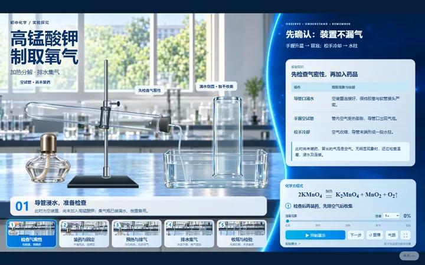
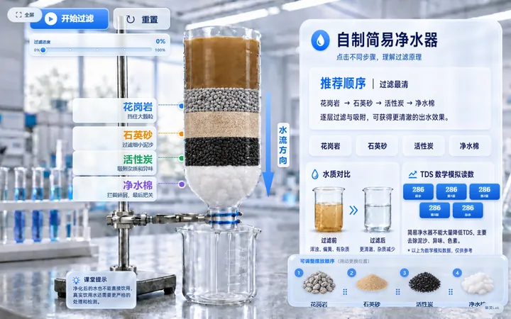
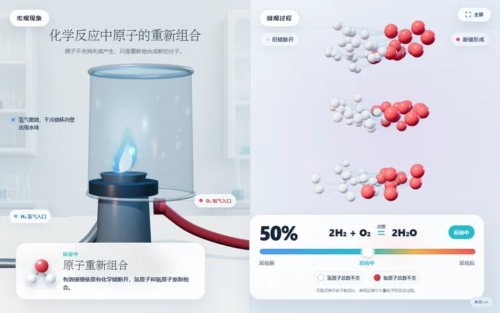
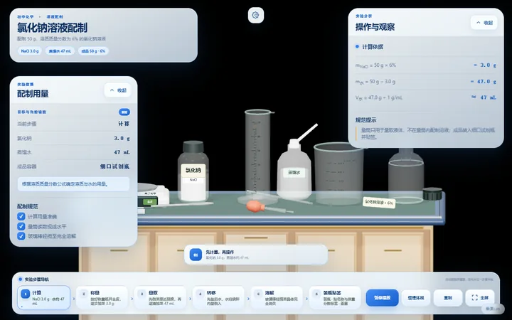
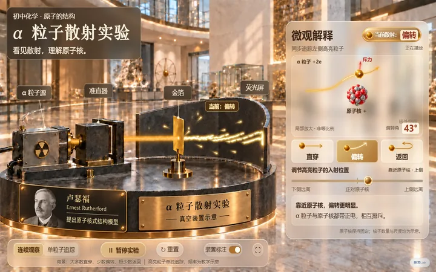

关于范围：原站初中化学共 44 个课件，其中 6 个为免费课件。 本离线包收录的就是这 6 个可完整运行的全部课件；其余 38 个需付费解锁，服务端不下发课件正文，故未收录。

九年级上册 · 第二单元
氧气制取
高锰酸钾制氧五步装置：检查气密性、装药固定、预热排气、排水集气、收尾检验。
打开课件 →
九年级上册 · 第四单元
水的电解
宏观电解与微观电极变化同步演示，可检验氢气与氧气并对比体积比。
打开课件 →
九年级上册 · 第四单元
自制简易净水器
调整花岗岩、石英砂、活性炭、净水棉四层顺序，观察过滤速度与水质变化。
打开课件 →
九年级上册 · 第五单元
化学反应中原子的重新组合
氢气燃烧生成水，观察旧键断开、新键形成与原子种类数目守恒。
打开课件 →
九年级下册 · 第二单元
氯化钠溶液配制
六步完成 50 g / 6% 氯化钠溶液的计算、称量、量取、转移、溶解与装瓶。
打开课件 →
实验与拓展 · 科学拓展
α 粒子散射实验
卢瑟福 α 粒子散射：直穿、偏转、返回三种轨迹与原子核式结构模型。
打开课件 →